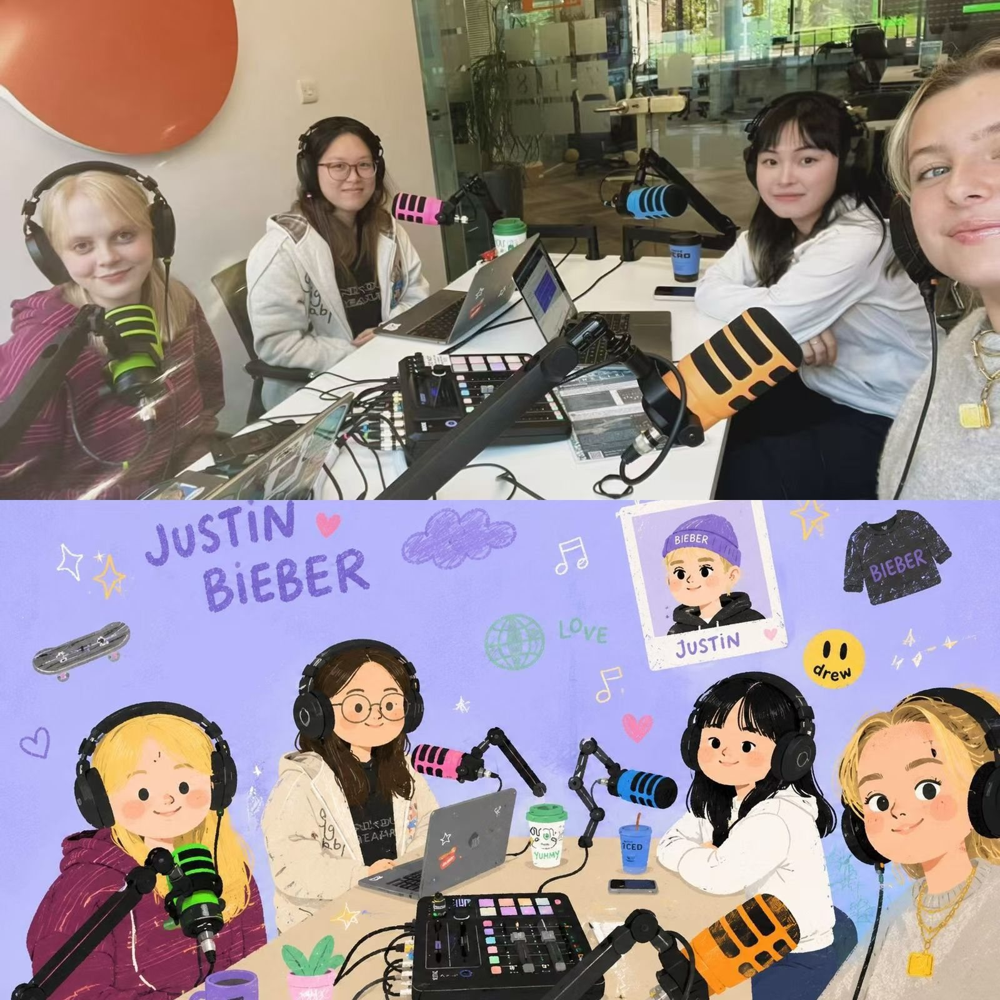

MODL2250 · Group Project
Analysing Justin Bieber's digital identity on TikTok vs Instagram

Have you ever scrolled past the same person on two different apps and thought — wait, is this even the same person? We use Bieber's accounts as a case study to explore how digital identity shifts by platform. Three angles: media theory, semiotics, and interculturalism. What looks like one person managing two accounts turns out to be a more complicated story about algorithms, signs, and whose voice gets heard.
Listen now
The team
Zifan
Media and Communications student with a focus on platform studies and digital identity. Leads the episode and anchors the media theory discussion.
Iris
Specialising in multimodal communication and semiotics. Brings the theoretical backbone to the SKYLRK case study and the platform structure analysis.
Jing
Background in intercultural communication. Connects the semiotic analysis to real-world platform behaviour and comment section dynamics.
Lily
Focusing on digital audiences and fan cultures. Grounds the discussion in concrete data from Bieber's actual posts, comment sections, and engagement figures.
Inside the episode
How we made it
We almost made a completely different podcast. Here's what actually happened.
The original idea
We started somewhere completely different: WeChat. If you haven't heard of it, think WhatsApp — but enormous in China, with over a billion users, built-in payments, and group chats that function like mini marketplaces. Three of us had never used it. So we downloaded it, joined a student secondhand-selling group in Leeds, and spent a few weeks watching how people buy and sell things through a messaging app. It was genuinely fascinating — and a little chaotic. But the more we explored it, the bigger our real question became: why do the same people behave so differently depending on which app they're in?
The pivot
We wrote a full first script about WeChat: emojis, visual communication, how a winking face means something completely different to a 20-year-old in Shanghai than to a 50-year-old in Leeds. But something kept nagging at us. WeChat was interesting — but it was also quite niche. We wanted a case study that anyone could look up and check for themselves. That's when we turned to Instagram and TikTok. Specifically: what happens when the same person runs accounts on two platforms that work in completely opposite ways? Justin Bieber had 52 TikTok posts across five years and 293 million Instagram followers. The contrast was already there. We just had to read it carefully.
The research
We went through his TikTok post by post — all 52 of them, from 2020 to the last one in late 2025. We tracked the SKYLRK shoe campaign across both platforms. We read comment sections: the Coachella posts, a photo of him teaching his son to fish, a post that got tangled up with a political controversy. What we found surprised us. The same fans, looking at the same person, were having completely different conversations depending on which platform they were on — and depending on where in the world they were posting from. A fan in Brazil, a fan in Indonesia, a fan in the UK: same page, different worlds.
Recording & editing
We recorded in one session. The original cut was nearly 25 minutes — we trimmed it to 17, cutting a whole section on Bieber's YouTube account (interesting, but it muddied the argument) and a fourth topic we had researched but couldn't land cleanly in the time. The best moments in the episode weren't planned: reactions to things we had found in the data that still surprised us even after weeks of looking at them. That's probably the honest answer to how this podcast got made — we followed a question until it got genuinely interesting, and then tried to share what we found.
Academic sources
Adami, E. (2017). Multimodality. In García, Flores & Spotti (Eds.), The Oxford Handbook of Language and Society. Oxford University Press.
Blommaert, J. & Varis, P. (2015). Enoughness, accent and light communities. Tilburg Papers in Culture Studies, 139.
Bucher, T. (2012). Want to be on the top? Algorithmic power and the threat of invisibility on Facebook. New Media & Society, 14(7).
Gee, J. P. (2005). Semiotic social spaces and affinity spaces. In Barton & Tusting (Eds.), Beyond Communities of Practice. Cambridge University Press.
Gillespie, T. (2014). The relevance of algorithms. In Media Technologies. MIT Press.
Horton, D. & Wohl, R. R. (1956). Mass communication and para-social interaction. Psychiatry, 19(3).
Kress, G. & van Leeuwen, T. (2001). Multimodal Discourse. Arnold.